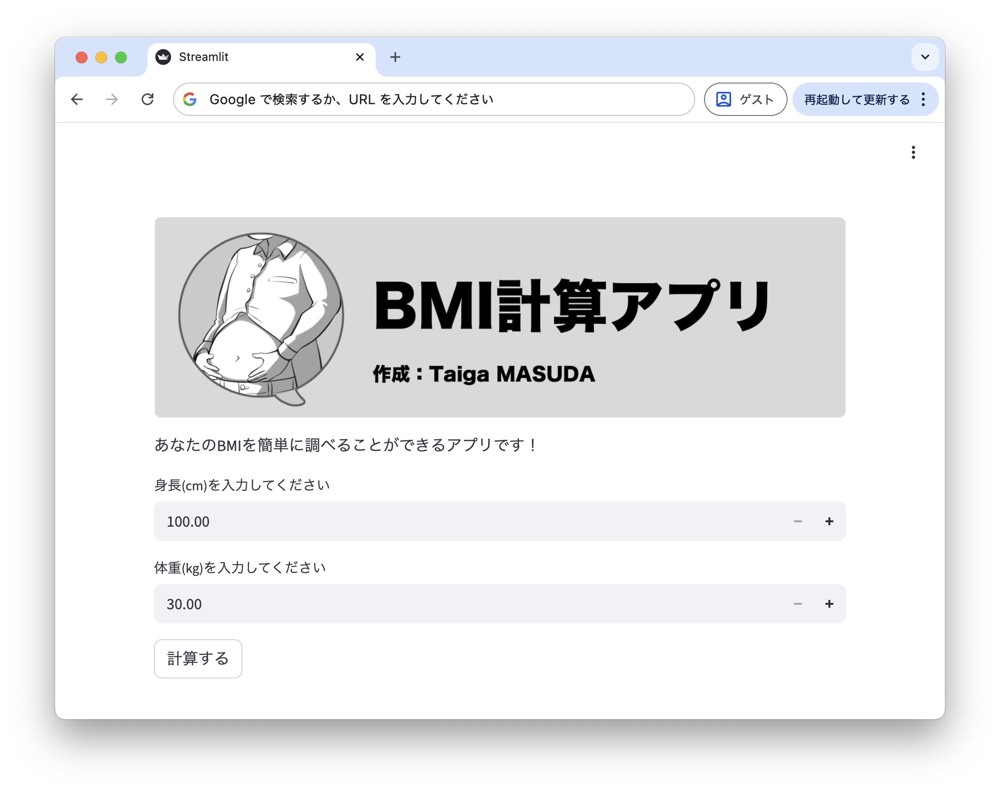

BMI計算アプリ
BMIを計算するためのWebアプリケーションです。
ユーザーが体重と身長を入力すると、BMIを計算して結果を表示します。
さらに、結果に基づいて肥満度を判定して表示します。
このような計算アプリは、Python Level 1 クラスの最後の課題で作成します！
作品の意図
私は、学生活動の中でストレス解消でラーメンを食べることが多いため、体重が増えていっています。
そこで、BMI（Body Mass Index）を簡単に計算できるアプリを作ろうと思いました。
作品の詳細
本作品では、BMIの計算をPythonで行っています。
ユーザーが入力した体重（kg）と身長（cm）をもとに、BMIを計算しています。
また、計算結果に基づいて、if文を用いて肥満度を判定し、その結果も表示しています。
使用技術
- Python
- if文
- streamlit